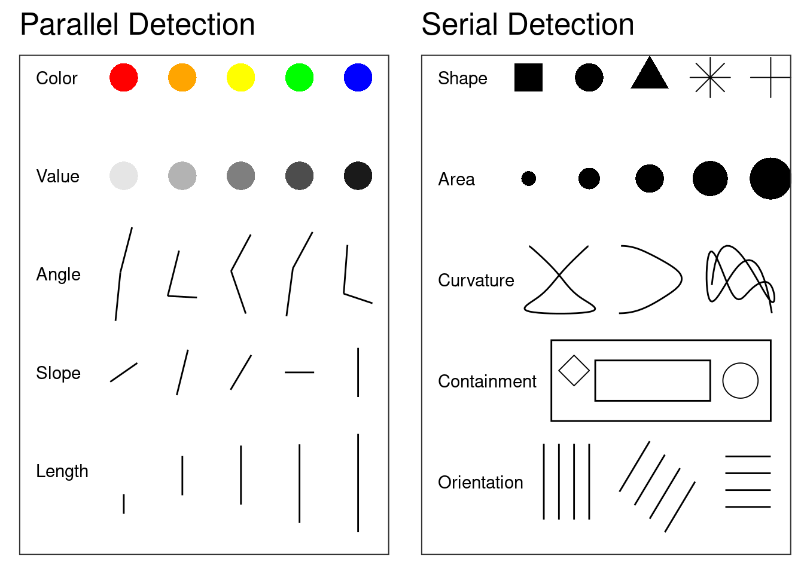
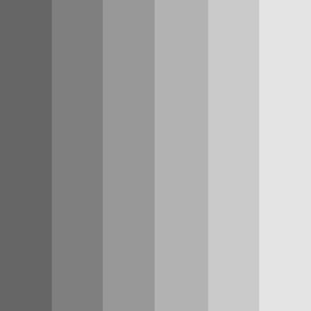

{kind=link}
{kind=link}
{kind=link}
{kind=link}

Fundamentals of Graphical Communication
A Quick Introduction to Perception and Cognition
In order to design graphics for the human perceptual system, we must understand, at a basic level, the makeup of the perceptual system. There are multiple levels of perception that must correctly function in order to perceive visual stimuli successfully, but a somewhat simplistic higher-level analogy would be that we must understand both the hardware and software of the human visual system to create effective graphics.
The “hardware”, in this analogy, consists of the neurons that make up the eyes, optic nerve, and the brain itself. The higher-level functions (object recognition, working memory, etc.) comprise the “software” component. In addition, much like computer software, there are different programs running simultaneously; these programs may interact with each other, run sequentially, or run in parallel. Here, we provide an overview of the important components of the visual system that influence graphical perception. First, we discuss the grey-matter (hardware) components of the visual system, then we examine the higher-level cognitive heuristics (software) that order the raw input and construct our visual environment.
Hardware
The physiology of perception is complex; what follows is a brief overview of the physiology of perception, focusing on the areas most important to the perception of statistical graphics. It is important to distinguish between the sensation (the retinal image) and the perception (the corresponding mental representation) of an object. This overview will entirely ignore the finer details of the organization of the brain: feature detector cells, specific processing units for certain types of visual stimuli, and most of the experiments and incidents that led to our current understanding of how the brain processes visual information. A more thorough presentation of these aspects of perception can be found in Goldstein and Cacciamani (2022).
The Eye
The eye is a complex apparatus, but for our purposes, the most important component of the eye is the retina, which contains the sensory cells responsible for transforming light waves into electrical information in the form of neural signals. These sensory cells are specialized neurons, known as rods and cones, which perceive light intensity (brightness) and wavelength (color), respectively. One section of the retina, known as the fovea, contains only cones; the rest of the retina contains a mixture of rods and cones. Figure 1 depicts the structure of the eye with a closeup of the retina.

Another important region of the retina is the blindspot, the area where the optic nerve exits the eye to connect the retina to the brain. There are no rods or cones in this region of the retina, and any vision in the region of space that maps onto this point is a result of two mechanisms: binocular vision (the other eye fills in the missing information) and your brain “filling in” what it believes should be there.

Figure 2 shows the responsiveness of rods and each of the three types of cones to wavelengths of light in the visual spectrum. As a result of the response of cone cells to different wavelengths of light, humans with normal color vision can better distinguish colors in the yellow-green portion of the color spectrum compared to colors in the red or blue portions of the spectrum.
Implications for Color Schemes
Rainbow-style color schemes are seldom appropriate for conveying numerical values, because the correspondence between perceived information and the displayed information is not accurately maintained by the visual system (Golebiowska and Coltekin 2022; Liu and Heer 2018; Borland and Taylor 2007; Light and Bartlein 2004). Rainbow schemes may perform slightly better in situations where the goal is to emphasize distributions of values (Reda 2022), but this effect is small relative to the disadvantages of rainbow color schemes for accessibility and interpretability.
Moreover, if a viewer has any level of color vision impairment (colloquially, ‘color blindness’), the viewer cannot perceive the full spectrum of colors. An estimated 5% of the population (10% of males, less than 1% of females) has some form of color vision impairment. Rainbow color schemes perform particularly poorly when color vision is impaired.
The Brain
Once light hits the retina and causes a signal in the receptor cells, the information travels along the optic nerve and into the brain. Multiple neighboring rods are connected to the same neuron, where each cone is connected to a single neuron. The combined wiring of rod cells is responsible for the Hermann grid illusion and the Mach bands seen in Figure 3. Both of these illusions are a product of lateral inhibition, which is a result of the wiring of rod cells in the retina. Essentially, neurons can only fire at a specific rate, so when neighboring cells are all stimulated simultaneously, the combined neuron cannot fire fast enough to pass on all of the signals, causing inhibition. The specifics of this response and its relationship with the wiring of the receptor cells are too complex for this summary.


Once neural impulses have left the retina through the optic nerve, they travel to the visual cortex by way of several specialized structures within the brain that process lower-level signals. Receptor cells in the visual cortex respond to specific angles, spatial locations, colors, and intensities, and arrays of these special ‘feature detector cells’ process the information into a form used by higher-level processes (Hubel and Wiesel 1962). These higher-level processes are what we have previously called ‘software’: they are not directly related to the physical brain, but they do process information heuristically to produce higher-level reasoning and conclusions. In the next section, we explore some of the higher-level processes responsible for visual perception.
Software
Many of the processes for visual perception run simultaneously; in absence of a strict temporal ordering, we will start with the more basic tasks of visual perception and proceed towards higher-level processes.
Attention and Perception
In many tasks, it is necessary to pay attention to many parallel input streams simultaneously; this is particularly true for complex tasks like driving a car. These tasks demand divided attention; the brain must process many different sources of information in parallel. By contrast, most image recognition tasks require selective attention, that is, focusing on specific objects and ignoring everything else. The brain accomplishes this attention through several mechanisms.
Selective attention is accomplished by focusing the fovea (the area with the highest visual acuity) on the object. For instance, if the object is a page of text, each word will pass through the fovea, producing a focused stream of visual input. This stream of input consists of saccades (jumps between points of focus) and pauses in which the visual information is relayed to the brain.
Selective attention is generally necessary for perception to occur, though there is some information that is encoded automatically. The “gorilla” film experiment demonstrates that even when there is attention focused on a task, information extraneous to that task is not always encoded, that is, when participants focused on counting the number of passes between players in the basketball game, many did not notice the gorilla walking through the middle of the court. It is important to understand which parts of a visual stimulus are the focus of a given perceptual task, because most of the information encoded by the brain is a result of selective attention. Eye-tracking can be an important tool useful to understand these perceptual processes, but participants may also be able to self-report which parts of a stimulus contributed to their decision.
Within the brain, attention is important because it allows different regions of the brain which process color, shape, and position to integrate these perceptions into a multifaceted mental representation of the object (Goldstein and Cacciamani 2022). This process, known as binding, is essential to coherently encode a scene into working memory. Feature integration theory (Treisman 1980) suggests that these separate streams of information are initially encoded in the preattentive stage of object perception; focusing on the object triggers the binding of these separate streams into a single coherent stream of information. Many single features, such as color, length, and texture are preattentive, because they can be pinpointed in an image without focused attention (and thus can be located faster), but specific combinations of color and shape require attention (because the features must be bound together) and are thus more difficult to search. Preattentive features are generally processed in parallel (that is, the entire scene is processed nearly simultaneously), while features requiring attention are processed serially.
Examples of features processed serially and in parallel are shown in Figure 4 [Helander, Landauer, and Prabhu (1997); Chapter 6].
Feature integration as a result of attention enables the brain to process a figure holistically and integrate all of the separate aspects of the object into a single perceptual experience. This processing is important for the most basic visual processes we take for granted, including object perception.
Object Perception
The most basic task of the visual system is to perceive objects in the world around us. This is an inherently difficult task, however, because the retina is a flat, two-dimensional surface responsible for conveying a three-dimensional visual scene. This dimensional reduction means that there are multiple three-dimensional stimuli that can produce the same visual image on the retina. This is known as the inverse projection problem - an infinite number of three-dimensional objects produce the same two-dimensional image. Less relevant to statistical graphics, but still complicating the object perception process, a single object can be viewed from a multitude of angles, in many different situations which may affect the retinal image (lighting, partial obstruction, etc). In addition, we recognize objects even when they are partially obscured or viewed from an angle we have not previously seen. These problems mean that the brain must utilize many different heuristics to increase the accuracy of the perceived world relative to an ambiguous stimulus.
The most commonly cited set of heuristics for object perception (and the set most relevant to statistical graphics) arise from the Gestalt school of psychology and are known as the Principles of Grouping. These principles relate to the idea ``the whole is greater than the sum of the parts’’, that is, that the components of a visual stimulus, when combined, create something that is more meaningful than the separate components considered individually. The Gestalt principles of grouping are as follows:
- Pragnanz (the law of closure) Every stimulus pattern is seen so that the resulting structure is as simple as possible.
- Proximity Things that are close in space appear to be grouped.
- Similarity Similar items appear to be grouped together. The law of similarity is usually subordinate to the law of proximity.
- Good Continuation Points that can be connected to form straight lines or smooth curves seem to belong together, and lines seem to follow the smoothest path.
- Common Fate Things moving in the same direction are part of a single group.
- Familiarity Things are more likely to form groups if the groups are familiar.
- Common Region Things that are in the same region (container) appear to be grouped together
- Uniform Connectedness A connected region of objects is perceived as a single unit.
- Synchrony Events occurring at the same time will be perceived as belonging together.
These principles are demonstrated in Figure 5.

The Psychology of Charts
In this section, we’ll primarily focus on how the concepts introduced previously apply to statistical graphics. At first glance, the cognitive psychology introduced above may seem unrelated to graphics and perception; however, this could not be further from the truth. It is critical to understand and consider perception and cognition when creating graphics which facilitate easy comprehension of the underlying data in visual form.
Strategies for Readability
Center Primary Comparisons
Reduce Cognitive Load
Testing Multiple Versions of a Chart
http://homepage.stat.uiowa.edu/~luke/classes/STAT4580-2024/notes.html#mostly-data-visualization
References
Borland, D., and R. M. Taylor. 2007. “Rainbow Color Map (Still) Considered Harmful.” IEEE Computer Graphics and Applications 27 (2): 14–17. https://doi.org/10.1109/mcg.2007.323435.
Goldstein, E. Bruce, and Laura Cacciamani. 2022. Sensation and Perception. Eleventh edition. Australia: Cengage.
Golebiowska, I. M., and A. Coltekin. 2022. “Rainbow Dash: Intuitiveness, Interpretability and Memorability of the Rainbow Color Scheme in Visualization.” IEEE Transactions on Visualization and Computer Graphics 28, 07: 2722–33. https://doi.org/10.1109/TVCG.2020.3035823.
Helander, M. G., T. K. Landauer, and P. V. Prabhu. 1997. Handbook of Human-Computer Interaction. Second. North Holland. http://gen.lib.rus.ec/book/index.php?md5=4941df4ad2ca3481b0dc4291667428b7.
Hubel, D. H., and T. N. Wiesel. 1962. “Receptive Fields, Binocular Interaction and Functional Architecture in the Cat’s Visual Cortex.” The Journal of Physiology 160 (1): 106–54. https://doi.org/10.1113/jphysiol.1962.sp006837.
Light, Adam, and Patrick J Bartlein. 2004. “The End of the Rainbow? Color Schemes for Improved Data Graphics.” Eos, Transactions American Geophysical Union 85 (40): 385–91. https://doi.org/10.1029/2004EO400002.
Liu, Yang, and Jeffrey Heer. 2018. “Somewhere Over the Rainbow: An Empirical Assessment of Quantitative Colormaps.” In Proceedings of the 2018 CHI Conference on Human Factors in Computing Systems, 1–12. Montreal QC Canada: ACM. https://doi.org/10.1145/3173574.3174172.
Reda, Khairi. 2022. “Rainbow Colormaps: What Are They Good and Bad For?” IEEE Transactions on Visualization and Computer Graphics, 1–15. https://doi.org/10.1109/TVCG.2022.3214771.
Treisman, Anne M. 1980. “A Feature-Integration Theory of Attention.” Cognitive Psychology 12: 97–136. https://doi.org/10.1016/0010-0285(80)90005-5.